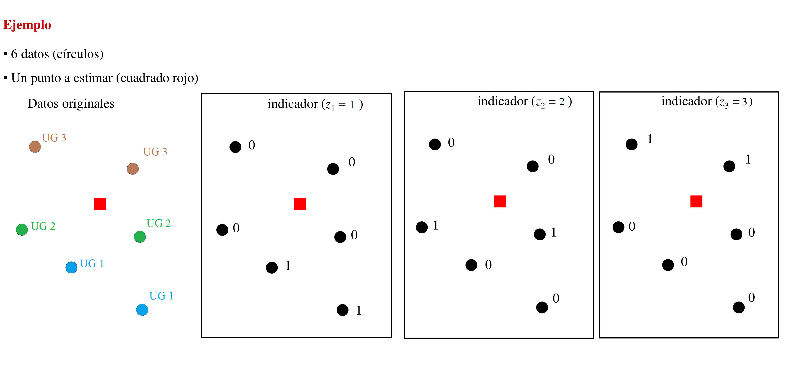
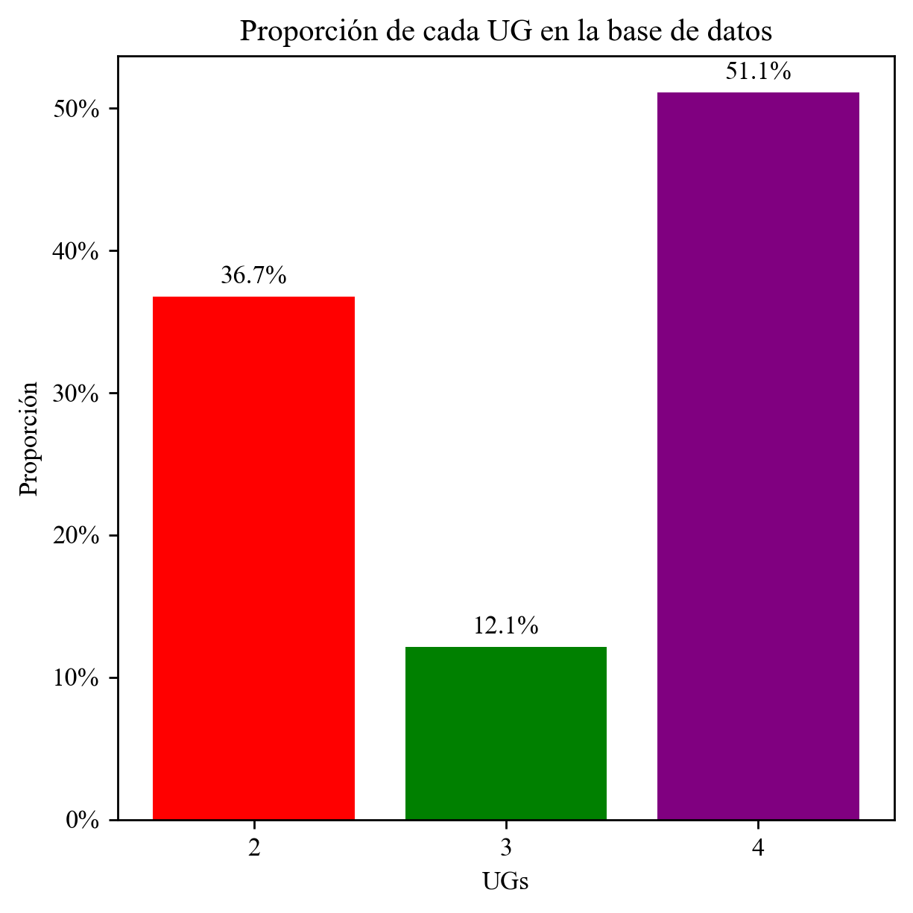
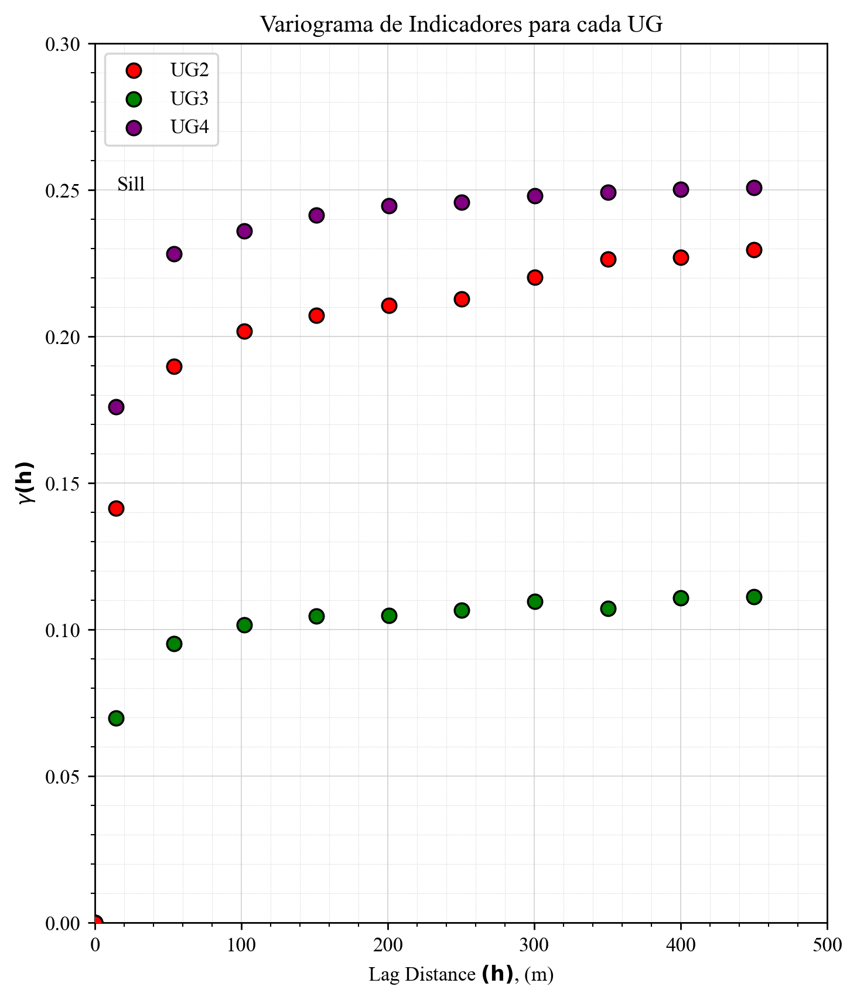
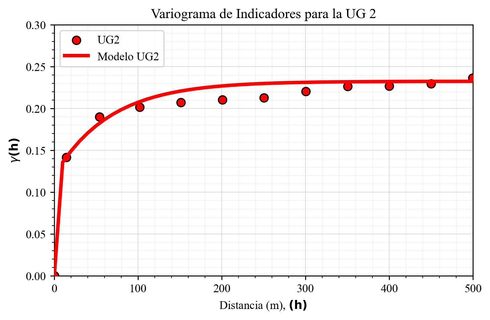
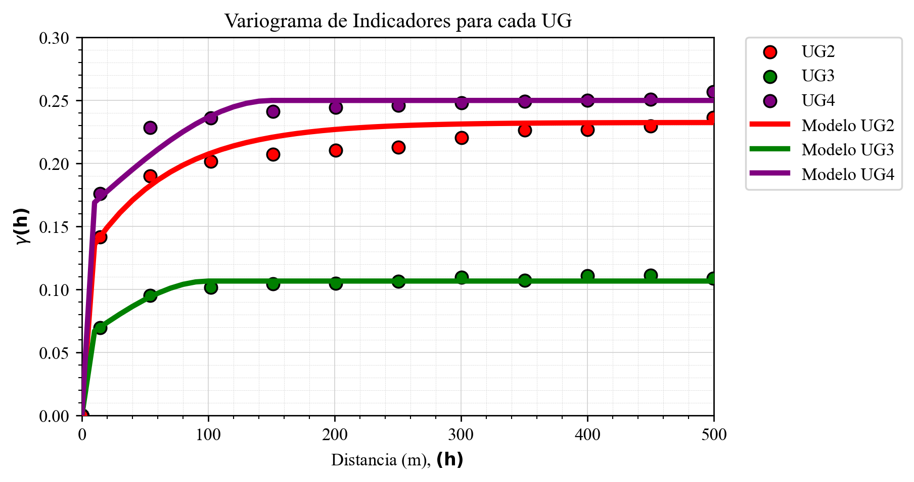
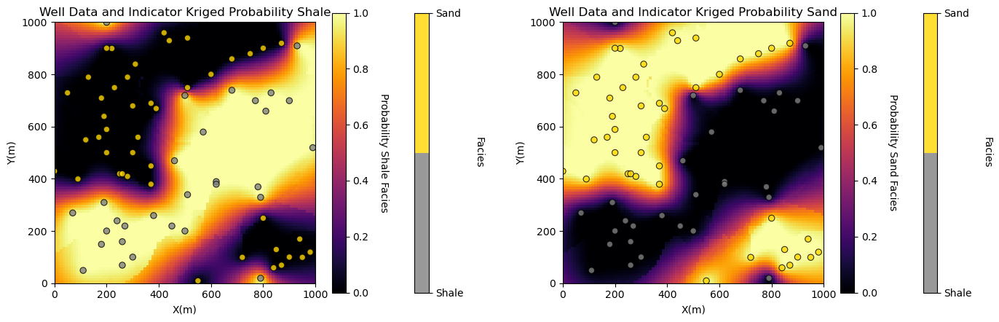
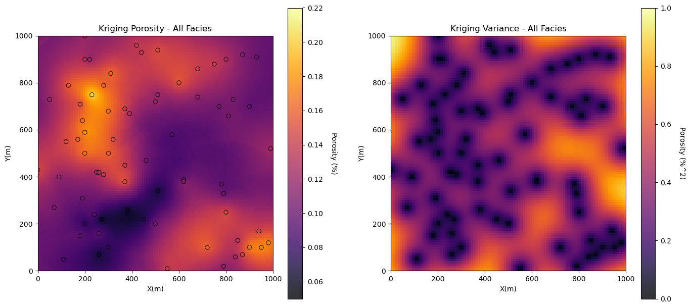
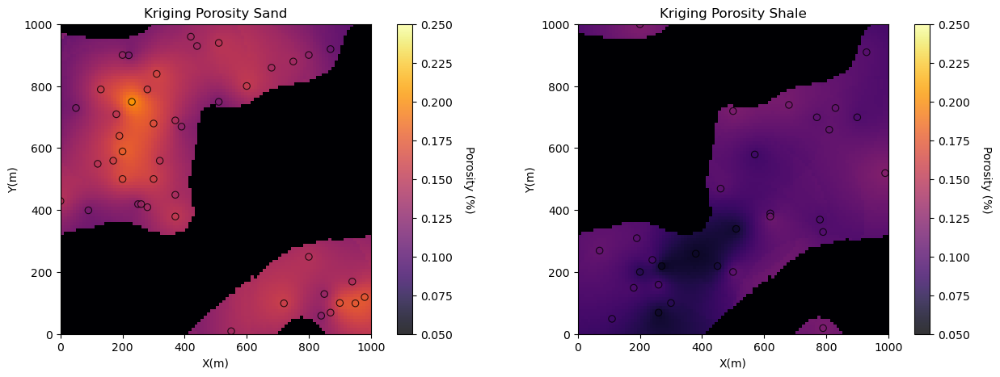
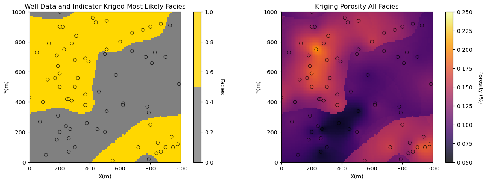

3. Determinación de Volúmenes de estimación
Nuestro objetivo es determinar el volumen espacial que sera el limite de estimación para cada una de las Unidades Geológicas. Es decir, la estimación realizada con la información perteneciente a cada unidad geológica definida no rebasara mas allá de los limites representados por este volumen .
Nuestro punto de partida sera la base de datos simplificada de la sección anterior.
[3]:
## Cargar data simplificada de la sección anterior
import pandas as pd
import numpy as np
# Cargar base de datos en pandas
df = pd.read_csv('data.csv', sep=',', encoding='latin1')
df
[3]:
| X | Y | Z | cu_pct | UG | |
|---|---|---|---|---|---|
| 0 | 472187.343570 | 6.925806e+06 | 4211.772172 | 0.020300 | 2.0 |
| 1 | 472187.740701 | 6.925807e+06 | 4205.844155 | 0.009500 | 2.0 |
| 2 | 472188.089349 | 6.925807e+06 | 4199.915106 | 0.006767 | 2.0 |
| 3 | 472188.470072 | 6.925808e+06 | 4193.995578 | 0.010433 | 2.0 |
| 4 | 472188.878860 | 6.925809e+06 | 4188.084383 | 0.011133 | 2.0 |
| ... | ... | ... | ... | ... | ... |
| 16877 | 471922.691912 | 6.925392e+06 | 4022.517796 | 0.095000 | 4.0 |
| 16878 | 471924.631624 | 6.925395e+06 | 4017.651413 | 0.109000 | 4.0 |
| 16879 | 471926.586648 | 6.925397e+06 | 4012.784519 | 0.179667 | 4.0 |
| 16880 | 471928.548677 | 6.925400e+06 | 4007.918137 | 0.148333 | 4.0 |
| 16881 | 471930.530423 | 6.925403e+06 | 4003.054819 | 0.206000 | 4.0 |
16882 rows × 5 columns
3.1. Un poco de teoría acerca del Kriging de indicadores
Para la determinación de cada volumen de estimación, emplearemos la técnica llamada Kriging de Indicadores.
3.1.1. Formalismo de indicadores
A continuación, usamos métodos indicadores para estimar una variable categórica en el espacio.
Si \(i(\bf{u}; z_k)\) es un indicador para una variable categórica \(z\) (como es el caso de la variable UG), definida como

entonces la probabilidad de que encontrar esta categoría lejos de las posiciones de nuestra data debería ser igual a la proporción de esta categoría en nuestra base de datos (por la hipótesis de estacionariedad)
por ejemplo,
dado la categoria UG = 2, \(z_2 = 2\), y dato en \(\bf{u}_1\), \(z(\bf{u}_1) = 2\), entonces \(i(\bf{u}_1; z_2) = 1\)
dado la categoria, \(z_1 = 1\), con una proporción en nuestra base de datos de 33.33%, y una variable aleatorea (VA) categorica lejos de los datos, \(Z(\bf{u})\), entonces la probabilidad de que la VA tome el valor \(z_1\) es igual a \(0.333\).
3.1.1.1. Variograma indicador
Los variogramas se calculan y modelan a partir de la transformación indicadora de los datos espaciales y se usan para el kriging de indicadores. El variograma indicador es,
donde \(i(\mathbf{u}_\alpha; z_k)\) e \(i(\mathbf{u}_\alpha + \mathbf{h}; z_k)\) son las transformaciones indicadoras para la categoría \(z_k\) en la posición de cola \(\mathbf{u}_\alpha\) y en la posición de cabeza \(\mathbf{u}_\alpha + \mathbf{h}\) respectivamente.
notar que la transformación indicadora \(i(\bf{u},z_k)\) es o bien 0 o bien 1, en cuyo caso \(\left[ i(\mathbf{u}_\alpha; z_k) - i(\mathbf{u}_\alpha + \mathbf{h}; z_k) \right]^2\) es igual a 0 cuando los valores en cabeza y cola pertenecen a la misma categoría $ z_k$, o 1 cuando son diferentes.
la meseta (sill) de un variograma indicador es la varianza indicadora calculada como,
donde \(p\) es la proporción de 1’s (o de ceros, ya que la función es simétrica respecto a la proporción)
3.1.1.2. Kriging de indicadores
La aplicación de kriging simple a un conjunto indicadores, una por cada categoría para características categóricas, define directamente un modelo de probabilidad local de una cierta categoría en una ubicación desconocida, \(\bf{u}\), a partir de nuestros datos.
El estimador de kriging de indicadores se define como,
donde \(\lambda_\alpha(k)\) es el peso de kriging indicador para el dato \(\alpha\) y la categoría \(k\), \(i(\mathbf{u}_\alpha; k)\) es la transformación indicadora de la categoría \(k\) del dato en la ubicación \(\mathbf{u}_\alpha\) y \(p(k)\) la probabilidad categórica.
Los pasos para el kriging de indicadores son,
Establecer una serie de categorías. En nuestro caso, estas ya fueron definidas en los capítulos anteriores.
Aplicar la transformación indicadora a los datos.
Calcular el variograma indicador a partir de la transformación indicadora de los datos para cada categoría.
Aplicar kriging de indicadores para estimar la probabilidad acumulada para características continuas o la probabilidad para características categóricas en una ubicación no muestreada, usando el variograma indicador para cada categoría.
Comentario general,
se necesita un modelo de variograma para cada categoría; por lo tanto, es un problema de inferencia difícil.
3.1.1.3. Cargar las bibliotecas requeridas
El siguiente código carga las bibliotecas requeridas.
[ ]:
#### Instalar libreria de geoestadistica Geostatspy
!pip install geostatspy
Requirement already satisfied: geostatspy in c:\users\alvaro\anaconda3\lib\site-packages (0.0.78)
[1]:
import geostatspy.GSLIB as GSLIB # GSLIB utilities, visualization and wrapper
import geostatspy.geostats as geostats # GSLIB methods convert to Python
import geostatspy
print('GeostatsPy version: ' + str(geostatspy.__version__))
import os # set working directory, run executables
from tqdm import tqdm # suppress the status bar
from functools import partialmethod
tqdm.__init__ = partialmethod(tqdm.__init__, disable=True)
ignore_warnings = True # ignore warnings?
import numpy as np # ndarrays for gridded data
import pandas as pd # DataFrames for tabular data
import matplotlib.pyplot as plt # for plotting
import matplotlib as mpl # custom colorbar
import matplotlib.ticker as mticker # custom colorpar ticks
from matplotlib.ticker import (MultipleLocator, AutoMinorLocator) # control of axes ticks
plt.rc('axes', axisbelow=True) # plot all grids below the plot elements
if ignore_warnings == True:
import warnings
warnings.filterwarnings('ignore')
cmap = plt.cm.inferno
GeostatsPy version: 0.0.78
3.1.2. Proporciones de cada UG en nuestra base de datos
Verificamos la proporción de cada UG en nuestra base de datos. (Para este ejemplo solo consideramos las UGs 2, 3 y 4.)
[4]:
fig, ax = plt.subplots(figsize=(5,5))
ax.clear()
plt.rcParams['figure.dpi'] = 250 # Setear resolución de la figura
plt.rcParams["font.family"] = "Times New Roman"
# Proporciones de cada UG en nuestra base de datos
color = ['red','green','purple']
proportions = df['UG'].value_counts(normalize=True).sort_index()
labels = proportions.index.astype(int).astype(str)
bars = ax.bar(labels, proportions.values, color=color[:len(proportions)])
ax.set_title('Proporción de cada UG en la base de datos')
ax.set_xlabel('UGs')
ax.set_ylabel('Proporción')
ax.yaxis.set_major_formatter(mticker.PercentFormatter(1.0))
for bar, p in zip(bars, proportions.values):
ax.annotate(f"{p*100:.1f}%", xy=(bar.get_x() + bar.get_width() / 2, p),
xytext=(0, 3), textcoords="offset points", ha='center', va='bottom')
fig.tight_layout()
plt.show()

3.1.3. Codificar base de datos en funcion de indicadores
Convendrá agregar a nuestra base de datos 3 columnas nuevas que codifiquen la variable indicador para cada UG
[5]:
# Agregar columnas de indicadores para cada UG
df['indicador UG_2'] = np.where(df['UG'] == 2, 1, 0)
df['indicador UG_3'] = np.where(df['UG'] == 3, 1, 0)
df['indicador UG_4'] = np.where(df['UG'] == 4, 1, 0)
df
[5]:
| X | Y | Z | cu_pct | UG | indicador UG_2 | indicador UG_3 | indicador UG_4 | |
|---|---|---|---|---|---|---|---|---|
| 0 | 472187.343570 | 6.925806e+06 | 4211.772172 | 0.020300 | 2.0 | 1 | 0 | 0 |
| 1 | 472187.740701 | 6.925807e+06 | 4205.844155 | 0.009500 | 2.0 | 1 | 0 | 0 |
| 2 | 472188.089349 | 6.925807e+06 | 4199.915106 | 0.006767 | 2.0 | 1 | 0 | 0 |
| 3 | 472188.470072 | 6.925808e+06 | 4193.995578 | 0.010433 | 2.0 | 1 | 0 | 0 |
| 4 | 472188.878860 | 6.925809e+06 | 4188.084383 | 0.011133 | 2.0 | 1 | 0 | 0 |
| ... | ... | ... | ... | ... | ... | ... | ... | ... |
| 16877 | 471922.691912 | 6.925392e+06 | 4022.517796 | 0.095000 | 4.0 | 0 | 0 | 1 |
| 16878 | 471924.631624 | 6.925395e+06 | 4017.651413 | 0.109000 | 4.0 | 0 | 0 | 1 |
| 16879 | 471926.586648 | 6.925397e+06 | 4012.784519 | 0.179667 | 4.0 | 0 | 0 | 1 |
| 16880 | 471928.548677 | 6.925400e+06 | 4007.918137 | 0.148333 | 4.0 | 0 | 0 | 1 |
| 16881 | 471930.530423 | 6.925403e+06 | 4003.054819 | 0.206000 | 4.0 | 0 | 0 | 1 |
16882 rows × 8 columns
Podemos, en base a esta información, calcular la media de los indicadores (igual a la proporción) y la varianza.
[6]:
# calcular la media de los indicadores (igual a la proporcion) y la varianza.
mean_UG2 = df['indicador UG_2'].mean()
var_UG2 = df['indicador UG_2'].var()
mean_UG3 = df['indicador UG_3'].mean()
var_UG3 = df['indicador UG_3'].var()
mean_UG4 = df['indicador UG_4'].mean()
var_UG4 = df['indicador UG_4'].var()
print(f"UG2 - Media: {mean_UG2:.2f}, Varianza: {var_UG2:.2f}")
print(f"UG3 - Media: {mean_UG3:.2f}, Varianza: {var_UG3:.2f}")
print(f"UG4 - Media: {mean_UG4:.2f}, Varianza: {var_UG4:.2f}")
UG2 - Media: 0.37, Varianza: 0.23
UG3 - Media: 0.12, Varianza: 0.11
UG4 - Media: 0.51, Varianza: 0.25
3.2. Variograma experimental de indicadores
Veamos los parámetros de la función gamv para datos irregulares, la función experimental de GeostatsPy para el cálculo de variogramas.
[30]:
geostats.gamv_3D # ver parametros de la función gamv
[30]:
<function geostatspy.geostats.gamv_3D(df, xcol, ycol, zcol, vcol, tmin, tmax, xlag, xltol, nlag, azm, dip, atol, dtol, bandwh, isill)>
Estamos listos para calcular los variogramas. Vamos a calcular variogramas isótropos para todas las UGs. Algunas notas sobre los parámetros que elegí:
[27]:
tmin = -9999.; tmax = 9999.;
xlag = 50.0; xltol = 25.0; nlag = 10; bandwh = 9999.9;
azm = 0; atol = 90.0; isill = 0; bandwh = 9999.9;
dip = 0; dtol = 9999.9;
tmin, tmax son límites de recorte — establecidos para no tener impacto, no es necesario filtrar los datos.
lag_dist, lag_tol son la distancia de lag y la tolerancia de lag — definidos según el espaciado común de los datos (50 m) y con una tolerancia del 50% de la distancia de lag para un mayor suavizado.
nlag es el número de lags — definido para extenderse un poco más allá del 50% del rango de los datos.
bandh es el ancho de banda horizontal — configurado para no tener efecto.
bandv es el ancho de banda vertical — configurado para no tener efecto.
azi es el acimut — no tiene efecto porque hemos fijado atol (tolerancia de acimut) en 90.0.
isill es un indicador para estandarizar la distribución a varianza 1 — no será usado durante este curso.
isillh es un indicador para estandarizar la distribución a varianza 1 — no será usado durante este curso.
Probemos estos parámetros y visualicemos los resultados.
[54]:
lag, UG2_gamma, UG2_npair = geostats.gamv(df,"X","Y","indicador UG_2",tmin,tmax,lag_dist,lag_tol,nlag,azi,atol,
bandh,isill)
lag, UG3_gamma, UG3_npair = geostats.gamv(df,"X","Y","indicador UG_3",tmin,tmax,lag_dist,lag_tol,nlag,azi,atol,
bandh,isill)
lag, UG4_gamma, UG4_npair = geostats.gamv(df,"X","Y","indicador UG_4",tmin,tmax,lag_dist,lag_tol,nlag,azi,atol,
bandh,isill)
# lag, UG2_gamma, UG2_npair = geostats.gamv_3D(df,"X","Y","Z","indicador UG_2", tmin, tmax, xlag, xltol, nlag, azm, dip, atol, dtol, bandwh, isill)
# lag, UG3_gamma, UG3_npair = geostats.gamv_3D(df,"X","Y","Z","indicador UG_3", tmin, tmax, xlag, xltol, nlag, azm, dip, atol, dtol, bandwh, isill)
# lag, UG4_gamma, UG4_npair = geostats.gamv_3D(df,"X","Y","Z","indicador UG_4", tmin, tmax, xlag, xltol, nlag, azm, dip, atol, dtol, bandwh, isill)
fig, ax = plt.subplots(figsize=(5,2.5))
ax.clear()
plt.rcParams['figure.dpi'] = 250 # Setear resolución de la figura
plt.rcParams["font.family"] = "Times New Roman"
plt.scatter(lag,UG2_gamma,color = 'red',edgecolor='black',s=50,marker='o',label = 'UG2',zorder=10)
plt.scatter(lag,UG3_gamma,color = 'green',edgecolor='black',s=50,marker='o',label = 'UG3',zorder=9)
plt.scatter(lag,UG4_gamma,color = 'purple',edgecolor='black',s=50,marker='o',label = 'UG4',zorder=8)
plt.xlabel(r'Distancia (m), $\bf(h)$ '); plt.ylabel(r'$\gamma \bf(h)$')
plt.title('Variograma de Indicadores para cada UG')
plt.xlim([0,500]); plt.ylim([0,.3]); plt.legend(loc='upper left');
## add grid lines
plt.grid(visible=True, which='major', color='lightgrey', linestyle='-', linewidth=0.5)
plt.grid(visible=True, which='minor', color='lightgrey', linestyle='--', linewidth=0.2)
plt.minorticks_on()
plt.subplots_adjust(left=0.0, bottom=0.0, right=1.0, top=1.2, wspace=0.2, hspace=0.3)
plt.show()

Nota: hemos escalado el tamaño de los puntos según el número relativo de pares.
Los puntos pequeños tienen menos pares de datos; por lo tanto, son menos confiables.
Construyamos un modelo razonable hasta la meseta (sill).
3.3. Modelado del variograma
Usamos la función make_variogram de GeostatsPy para construir un objeto modelo de variograma.
Es un diccionario para almacenar de forma compacta los parámetros del modelo de variograma que se usan en la visualización, kriging y simulación.
Los parámetros del modelo de variograma incluyen:
nug - aporte del efecto pepita (nugget) a la meseta (sill)
nst - número de estructuras anidadas (1 o 2)
it - tipo para la estructura (1 - esférico, 2 - exponencial, 3 - gaussiano)
cc - contribución de cada estructura anidada (las contribuciones + nugget deben sumar la meseta)
azi - acimut para esta estructura (dirección mayor), la minor es ortogonal
hmaj - alcance en la dirección mayor
hmin - alcance en la dirección menor
Usamos arreglos para it, cc, azi, hmaj y hmin cuando hay más de una estructura anidada.
Si solo usamos 1 estructura (más opción de nugget), omita los parámetros de la segunda estructura y estos por defecto serán \(cc2 = 0\) (sin contribución).
Tomemos como ejemplo la UG 2. Aquí está mi modelo:
[48]:
nug = 0.12; nst = 1 # definimos el efecto pepa (0.12) y el número de estructuras anidadas (1)
it1 = 2; cc1 = (var_UG2 - nug); azi1 = 0; dip1=0; hmaj1 = 200; hmin1 = hmaj1; hvert1 = hmaj1; # 1 estructura anidada (exponencial)
vario_UG2 = geostats.make_variogram3D(nug,nst,it1,cc1,azi1,dip1,hmaj1,hmin1,hvert1) # crear el objeto del modelo de variograma
make_variogram Warning: sill does not sum to 1.0, do not use in simulation
No considerar aviso, el cual nos indica que la suma de las mesetas no suma 1.0 (precaviendo en el caso de variables con varianza estandarizada igual a 1)
Para trazar el variograma usamos la función vmodel de GeostatsPy que proyecta el modelo a un conjunto de distancias de lag en las direcciones mayor y menor.
Las entradas para vmodel son:
nlag - número de puntos a lo largo del variograma para la proyección
xlag - tamaño del lag para la proyección
azm - dirección de la proyección en azimut (trabajamos en 2D)
vario - el diccionario del modelo de variograma creado con
make_variogram
Nota: esta función es solo para visualización; por eso es habitual usar un xlag muy pequeño y un nlag grande para una visualización de alta resolución del modelo.
Las salidas de vmodel incluyen:
index - número de lag para la proyección
lag distance - distancia offset a lo largo de la proyección (el \(\mathbf{h}\) en el gráfico)
variogram - valor del variograma en esa distancia de lag (el \(\gamma(\mathbf{h})\))
covariance function - la función de covarianza asociada
correlogram - el correlograma para la distancia de lag (para \(\rho(\mathbf{h})\))
Tenemos 1 estructura y con efecto pepa como ejemplo para el caso de la UG 2.
[49]:
nlag = 100; xlag = 10; azm = 0; dip = 0; # project the model in 0 azimuth
index,h_UG2,gam_UG2,cov,ro = geostats.vmodel_3D(nlag,xlag,azm,dip,vario_UG2)
fig, ax = plt.subplots(figsize=(5,2.5))
ax.clear()
plt.rcParams['figure.dpi'] = 250 # Setear resolución de la figura
plt.rcParams["font.family"] = "Times New Roman"
plt.scatter(lag,UG2_gamma,color = 'red',edgecolor='black',s=50,marker='o',label = 'UG2',zorder=10)
plt.plot(h_UG2,gam_UG2,color='red',lw=3,zorder=100,label = 'Modelo UG2')
plt.xlabel(r'Distancia (m), $\bf(h)$ '); plt.ylabel(r'$\gamma \bf(h)$')
plt.title('Variograma de Indicadores para la UG 2')
plt.xlim([0,500]); plt.ylim([0,.3]); plt.legend(loc='upper left');
## add grid lines
plt.grid(visible=True, which='major', color='lightgrey', linestyle='-', linewidth=0.5)
plt.grid(visible=True, which='minor', color='lightgrey', linestyle='--', linewidth=0.2)
plt.minorticks_on()
plt.subplots_adjust(left=0.0, bottom=0.0, right=1.0, top=1.2, wspace=0.2, hspace=0.3)
plt.show()
x,y,z offsets = 0.0,10.0,0.0

Se ve bastante bien; recuerde que solo modelamos hasta la meseta (sill) y no por encima de ella.
Ahora modelamos los variogramas para el resto de las categorías.
[53]:
nug = 0.06; nst = 1 # Variograma para UG 3 (verde)
it1 = 1; cc1 = (var_UG3 - nug); azi1 = 0; dip = 0; hmaj1 = 100; hmin1 = hmaj1; hvert1 = hmaj1;
vario_UG3 = geostats.make_variogram3D(nug,nst,it1,cc1,azi1,dip1,hmaj1,hmin1,hvert1) # crear objeto variograma modelado
index,h_UG3,gam_UG3,cov,ro = geostats.vmodel_3D(nlag,xlag,azm,dip1,vario_UG3)
nug = 0.16; nst = 1 # Variograma para UG 4 (morado)
it1 = 1; cc1 = (var_UG4 - nug); azi1 = 0; dip = 0; hmaj1 = 150; hmin1 = hmaj1; hvert1 = hmaj1;
vario_UG4 = geostats.make_variogram3D(nug,nst,it1,cc1,azi1,dip1,hmaj1,hmin1,hvert1) # crear objeto variograma modelado
index45,h_UG4,gam_UG4,cov,ro = geostats.vmodel_3D(nlag,xlag,azm,dip,vario_UG4)
fig, ax = plt.subplots(figsize=(5,2.5)) # Plotear todos los variogramas juntos
ax.clear()
plt.rcParams['figure.dpi'] = 250 # Setear resolución de la figura
plt.rcParams["font.family"] = "Times New Roman"
plt.scatter(lag,UG2_gamma,color = 'red',edgecolor='black',s=50,marker='o',label = 'UG2',zorder=10)
plt.scatter(lag,UG3_gamma,color = 'green',edgecolor='black',s=50,marker='o',label = 'UG3',zorder=9)
plt.scatter(lag,UG4_gamma,color = 'purple',edgecolor='black',s=50,marker='o',label = 'UG4',zorder=8)
plt.plot(h_UG2,gam_UG2,color='red',lw=3,zorder=100,label = 'Modelo UG2')
plt.plot(h_UG3,gam_UG3,color='green',lw=3,zorder=100,label = 'Modelo UG3')
plt.plot(h_UG4,gam_UG4,color='purple',lw=3,zorder=100,label = 'Modelo UG4')
plt.xlabel(r'Distancia (m), $\bf(h)$ '); plt.ylabel(r'$\gamma \bf(h)$')
plt.title('Variograma de Indicadores para cada UG')
plt.xlim([0,500]); plt.ylim([0,.3]); plt.legend(loc='upper left');
## add grid lines
plt.grid(visible=True, which='major', color='lightgrey', linestyle='-', linewidth=0.5)
plt.grid(visible=True, which='minor', color='lightgrey', linestyle='--', linewidth=0.2)
plt.minorticks_on()
# mover legenda fuera del plot
plt.legend(bbox_to_anchor=(1.05, 1), loc='upper left', borderaxespad=0.)
plt.subplots_adjust(left=0.0, bottom=0.0, right=1.0, top=1.2, wspace=0.2, hspace=0.3)
plt.show()
make_variogram Warning: sill does not sum to 1.0, do not use in simulation
x,y,z offsets = 0.0,10.0,0.0
make_variogram Warning: sill does not sum to 1.0, do not use in simulation
x,y,z offsets = 0.0,10.0,0.0

3.4. Kriging de Indicadores
3.4.1. Especificar la grilla
Ya conocemos los parámetros de nuestra grilla, definidos en la primera sección de este capitulo.
[13]:
xmin = 471116.24; xmax = 473023.89 # rango de valores x
ymin = 6924721.57; ymax = 6926164.63 # rango de valores y
zmin = 2950.02; zmax = 4445.78 # rango de valores z
xsiz = 15; ysiz = 15; zsiz = 15 # tamaño de celda
nx = 128; ny = 97; nz = 100 # número de celdas
xmn = 471108.74; ymn = 6924714.07; zmn = 2942.52 # origen de la cuadrícula, ubicación del centro de la celda inferior izquierda
tmin = -999; tmax = 999; # límites de recorte de datos
ugmin = 2; ugmax = 4 # establecer min y max de características para las barras de color
icx = int(nx/2); cx = xmn + icx*xsiz # center layers and slices for plotting
icy = int(ny/2); cy = ymn + icy*ysiz
icz = int(nz/2); cz = zmn + icz*zsiz
3.4.1.1. Kriging de indicadores para categorías
Definamos los siguientes parámetros para el Kriging:
[61]:
nxdis = 1; nydis = 1 # discretización para kriging, 1 para kriging puntual
ndmin = 1; ndmax = 10 # mínimo y máximo de datos para kriging
radius = 500 # distancia máxima de búsqueda
ktype = 0 # tipo de kriging, 0 - simple, 1 - ordinario
ivtype = 1 # tipo de variable, 0 - categórica, 1 - continua
tmin = -9999.; tmax = 9999.;
Ahora, definamos las categorías de facies, proporciones globales junto con los modelos de continuidad espacial para nuestras tres categorías.
[60]:
gcdf = [mean_UG2, mean_UG3, mean_UG4] # las proporciones globales de las categorías
varios = [] # la lista de variogramas
varios.append(vario_UG2) # variograma de indicadores UG2
varios.append(vario_UG3) # variograma de indicadores UG3
varios.append(vario_UG4) # variograma de indicadores UG4
Estamos listos para ejecutar el Kriging de indicadores con las 3 categorías y calcular la probabilidad de cada UG en todas las ubicaciones.
[55]:
geostats.kb3d # ver parametros de la función kb3d
[55]:
<function geostatspy.geostats.kb3d(df, xcol, ycol, zcol, vcol, tmin, tmax, nx, xmn, xsiz, ny, ymn, ysiz, nz, zmn, zsiz, nxdis, nydis, nzdis, ndmin, ndmax, radius_hori, radius_vert, ktype, skmean, vario3D)>
3.4.1.2. Krigind de Indicadores para primera UG (UG 2)
[ ]:
%%capture --no-display
no_trend = np.zeros((1,1)) # null ndarray not of correct size so ik2d will not trend
ikmap = geostats.kb3d(df,'X','Y','Z','UG',ivtype,tmin,tmax, nx, xmn, xsiz, ny, ymn, ysiz, nz, zmn, zsiz, nxdis, nydis, nzdis, ndmin, ndmax, radius_hori, radius_vert, ktype, skmean=, vario3D=varios[0])
(df,'X','Y','Z','Facies',ivtype=0,koption=0,ncut=2,thresh=thresh,gcdf=gcdf,trend=dummy_trend,
tmin=tmin,tmax=tmax,zmin=0.0,zmax=1.0,ltail=1,ltpar=1,middle=1,mpar=0,utail=1,utpar=2,nreal=nreal,
nx=grd3D['nx'],xmn=grd3D['xmn'],xsiz=grd3D['xsiz'],ny=grd3D['ny'],ymn=grd3D['ymn'],ysiz=grd3D['ysiz'],
nz=grd3D['nz'],zmn=grd3D['zmn'],zsiz=grd3D['zsiz'],
seed = seed,ndmin=ndmin,ndmax=ndmax,nodmax=nodmax,mults=1,nmult=3,noct=-1,ktype=0,varios=facies_varios)

The results are quite interesting. With the use of ordinary kriging we are able to handle the nonstationarity in the sand a shale data. See how the probability remains consistent away from data in locations with consistent facies.
For a surprising result, switch to simple kriging. We are actually using quite a short variogram range and we see the global proportions away from the data!
3.4.1.3. By-facies Kriging for Porosity
Now let’s try some kriging with the continuous properties. For this workflow we will demonstrate a cookie-cutter approach. The steps are:
model the facies, sand and shale, probabilities with indicator kriging
model the porosity for sand and shale separately and exhaustively, i.e. at all locations in the model
model the permeability for sand and shale separately and exhaustively, i.e. at all locations in the model
assign sand and shale locations based on the probabilities from step 1
combine the porosity and permeability from sand and shale regions together
Limitations of this Workflow:
kriging is too smooth, the spatial continuity is too high
kriging does not reproduce the continuous property distributions
we are not accounting for the correlation between porosity and permeability
We will correct these issues when we perform simulation later.
We need to add a couple of parameters and assume a porosity variogram model.
[ ]:
no_trend = np.zeros((1,1)) # null ndarray not of correct size so ik2d will not trend
skmean_por = 0.10; skmean_perm = 65.0 # simple kriging mean (if simple kriging is selected below)
ktype = 0 # kriging type, 0 - simple, 1 - ordinary
radius = 300 # search radius for neighbouring data
nxdis = 1; nydis = 1 # number of grid discretizations for block kriging
ndmin = 0; ndmax = 20 # minimum and maximum data for an estimate
tmin = 0.0 # minimum property value
por_vrange = 300 # porosity variogram range
por_vario = GSLIB.make_variogram(nug=0.0,nst=1,it1=1,cc1=1.0,azi1=45,hmaj1=por_vrange,hmin1=por_vrange) # por. variogram
Let’s start with spatial estimates of porosity and permeability with all facies combined. We will also look at the kriging estimation variance.
[ ]:
%%capture --no-display
por_kmap, por_vmap = geostats.kb2d(df,'X','Y','Porosity',tmin,tmax,nx,xmn,xsiz,ny,ymn,ysiz,nxdis,nydis,
ndmin,ndmax,radius,ktype,skmean_por,por_vario)
plt.subplot(121)
GSLIB.locpix_st(por_kmap,xmin,xmax,ymin,ymax,xsiz,pormin,pormax,df,'X','Y','Porosity','Kriging Porosity - All Facies',
'X(m)','Y(m)','Porosity (%)',cmap)
plt.subplot(122)
GSLIB.pixelplt_st(por_vmap,xmin,xmax,ymin,ymax,xsiz,0.0,1.0,'Kriging Variance - All Facies','X(m)','Y(m)',
'Porosity (%^2)',cmap)
plt.subplots_adjust(left=0.0, bottom=0.0, right=2.0, top=1.2, wspace=0.2, hspace=0.2); plt.show()

The results look good.
Now let’s build spatial estimation models for sand and shale separately. Now we need variograms for sand and shale separately, along with the declustered global means if simple kriging is used.
[ ]:
skmean_por_sand = 0.10; skmean_por_shale = 0.08
skmean_perm_sand = 3.0; skmean_perm_shale = 0.5
por_sand_vario = GSLIB.make_variogram(nug=0.0,nst=1,it1=1,cc1=1.0,azi1=0,hmaj1=500,hmin1=500) # porosity sand variogram
por_shale_vario = GSLIB.make_variogram(nug=0.0,nst=1,it1=1,cc1=1.0,azi1=0,hmaj1=500,hmin1=500) # porosity shale variogram
facies_kmap = np.zeros((ny,nx)); por_kmap = np.zeros((ny,nx)); perm_kmap = np.zeros((ny,nx)) # declare arrays for results
We are now ready to run these models, by-facies and visualize the results.
[ ]:
%%capture --no-display
por_sand_kmap, por_sand_vmap = geostats.kb2d(df_sand,'X','Y','Porosity',tmin,tmax,nx,xmn,xsiz,ny,ymn,ysiz,nxdis,nydis,
ndmin,ndmax,radius,ktype,skmean_por_sand,por_sand_vario) # sand porosity kriging
por_shale_kmap, por_shale_vmap = geostats.kb2d(df_shale,'X','Y','Porosity',tmin,tmax,nx,xmn,xsiz,ny,ymn,ysiz,nxdis,nydis,
ndmin,ndmax,radius,ktype,skmean_por_shale,por_shale_vario) # shale porosity kriging
for iy in range(0,ny): # cookie cutter approach, assume most likely facies
for ix in range(0,nx):
if ikmap[iy,ix,1] > 0.5: # current location is assumed to be sand
facies_kmap[iy,ix] = 1
por_kmap[iy,ix] = por_sand_kmap[iy,ix];
por_shale_kmap[iy,ix] = -1
else: # current location is assumed to be shale
facies_kmap[iy,ix] = 0
por_kmap[iy,ix] = por_shale_kmap[iy,ix];
por_sand_kmap[iy,ix] = -1
plt.subplot(121) # plot porosity estimates in sand
GSLIB.locpix_st(por_sand_kmap,xmin,xmax,ymin,ymax,xsiz,0.05,0.25,df_sand,'X','Y','Porosity','Kriging Porosity Sand',
'X(m)','Y(m)','Porosity (%)',cmap)
plt.subplot(122) # plot porosity estimates in shale
GSLIB.locpix_st(por_shale_kmap,xmin,xmax,ymin,ymax,xsiz,0.05,0.25,df_shale,'X','Y','Porosity','Kriging Porosity Shale',
'X(m)','Y(m)','Porosity (%)',cmap)
plt.subplots_adjust(left=0.0, bottom=0.0, right=2.0, top=0.8, wspace=0.0, hspace=0.2); plt.show()

Now let’s visualize the estimation models for porosity and permeability by-facies put together as a single map for each property.
[ ]:
plt.subplot(121) # plot facies estimates
GSLIB.locpix_st(facies_kmap,xmin,xmax,ymin,ymax,xsiz,0.0,1.0,df,'X','Y','Facies',
'Well Data and Indicator Kriged Most Likely Facies',
'X(m)','Y(m)','Facies',cmap_facies)
plt.subplot(122) # plot porosity estimates
GSLIB.locpix_st(por_kmap,xmin,xmax,ymin,ymax,xsiz,0.05,0.25,df,'X','Y','Porosity',
'Kriging Porosity All Facies','X(m)','Y(m)','Porosity (%)',cmap)
plt.subplots_adjust(left=0.0, bottom=0.0, right=2.0, top=0.8, wspace=0.0, hspace=0.2); plt.show()

3.4.1.4. Comments
This was a basic demonstration of indicator kriging for categorical spatial estimation with GeostatsPy but enough for the purposes of this course.